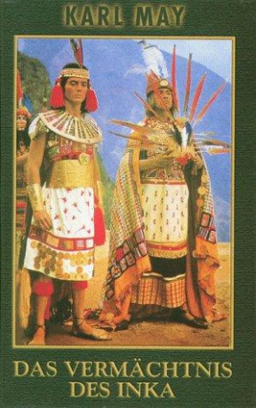
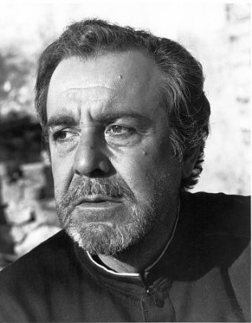

#381 Karl May 14 - Das Vermächtnis des Inka
Alternativ: Legacy of the Incas (Originaltitel)
 
 IMDB-Wertung: 5.6 / 10
IMDB-Wertung: 5.6 / 10  Metascore: 0
Metascore: 0 
In Peru, the land of the Incas, the Indian pin their hopes on Jaucarapora. They want to him as their king who could drive back the white conquistador. A stranger appears in Lima who risks his life to rescue the president from a charging wildcat. This Jaguar is accused of the two Incas' murder. The president gives him four weeks to prove his innocence. No matter where the Jaguar goes, the craftily circulated news that he is wanted killer is always there ahead of him. Graciela, his dead brother's daughter, sets out alone to forewarn him. The Jaguar finds out that Gambusino has killed his brother and Jinaucarapora's father. Jaucarapora meets Graciela and saves her life. They fall in love each other. Gambusino tries to kill the Jaguar but perishes himself. Graciela persuades Jaucarapora that an uprising against the incomparably stronger whites will ruin his people for good. He rejects the sacred crown. The last Inca suffers death at the hands of his own mentor.
Jahr: 1965
Dauer: 100 Minuten
FSK: 12
Land: Spanien Studio: Nora-FilmverleihTonspuren:
Untertitel:
Auflösung: 1080p (1980x816) Größe: 6502 MB
Genre: Abenteuer, Western
Regisseur: Georg Marischka
Drehbuch: Karl May, Georg Marischka, Winfried Groth, Franz Marischka
Soundtrack: Angelo Francesco Lavagnino
Darsteller:
- Guy Madison als Jaguar / Karl Hansen
-  Fernando Rey als President Castillo
- Francisco Rabal als Gambusino
 Rik Battaglia als Antonio Perillo
Rik Battaglia als Antonio Perillo- Heinz Erhardt als Professor Morgenstern
- Chris Howland als Don Parmesan
- Geula Nuni als Graziella
- William Rothlein als Haukaropora
- Carlo Tamberlani als Anciano
- Raf Baldassarre als Geronimo
- Geza De Rosner als Jan Hansen
- Winfried Groth als Sergeant
- Santiago Rivero als Minister Ruiz
- Lyubomir Dimitrov als El Brazo Valiente
- Bogomil Simeonov als Grosso
- Antonio Almorós als Escobedo
- Gancho Ganchev als
- Ivan Stefanov als
 Walter Giller als Fritz Kiesewetter
Walter Giller als Fritz Kiesewetter- Ingeborg Schöner als Mrs. Ruiz , uncredited
Datei: X:\Person\Karl May\Karl May 14 - Das Vermächtnis des Inka (1965, FSK12, 1980x816).mkv seit 20.02.2015
Festplatte: HD Collection-7+mehr(A-Z)+Person
 Es gibt insgesamt 20 Filme in der Gruppe 'Person\Karl May'
Es gibt insgesamt 20 Filme in der Gruppe 'Person\Karl May'